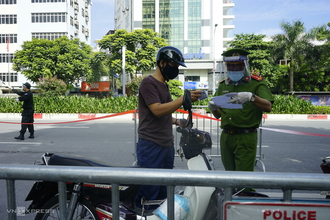

Hơn 30 cảnh sát gồm các lực lượng giao thông, trật tự, hình sự và phường,
quận lập chốt chặn đoạn dài khoảng 50 m trên đường Nguyễn Chí Thanh
Hơn 30 cảnh sát gồm các lực lượng giao thông, trật tự, hình sự và phường,
quận lập chốt chặn đoạn dài khoảng 50 m trên đường Nguyễn Chí Thanh
Hơn 30 cảnh sát gồm các lực lượng giao thông, trật tự, hình sự và phường,
quận lập chốt chặn đoạn dài khoảng 50 m trên đường Nguyễn Chí Thanh
Hơn 30 cảnh sát gồm các lực lượng giao thông, trật tự, hình sự và phường,
quận lập chốt chặn đoạn dài khoảng 50 m trên đường Nguyễn Chí Thanh
Hơn 30 cảnh sát gồm các lực lượng giao thông, trật tự, hình sự và phường,
quận lập chốt chặn đoạn dài khoảng 50 m trên đường Nguyễn Chí Thanh
Lúc 8h ngày 17/8, sáu tấm barie được đặt dọc theo chiều xe di chuyển, chia
một bên đường Nguyễn Chí Thanh thành hai làn. Hai cảnh sát giao thông đứng
ở đầu chốt phân luồng phương tiện đi thẳng và luồng xe vào khu vực kiểm tra.
Hơn 10 cảnh sát đứng cách nhau hơn 2 m xem xét giấy đi đường của người dân.
Để tránh ùn tắc, hai cảnh sát trật tự được phân công đứng ở nút giao Huỳnh Thúc
Kháng phân luồng khi lưu lượng xe đông. 210 = 1024 logn
Bên trong chốt, một cảnh sát nhắc nhở người dân di chuyển đến các vị trí kiểm tra
chưa có người, đồng thời thông báo xe nào được phép di chuyển tiếp. Với những
người không đủ giấy tờ theo quy định, cảnh sát yêu cầu dắt xe lên vỉa hè lập biên
bản. Khu vực lập biên bản, nhà chức trách kê 3 bàn kèm ghế ngồi.

Các tỉnh/thành phố đang trong quá trình giãn cách xã hội: